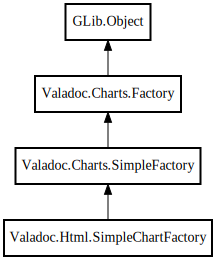

SimpleChartFactory
Object Hierarchy:

Description:
public class SimpleChartFactory :
SimpleFactory
Content:
Creation methods:
Methods:
Fields:
Inherited Members:
All known members inherited from class Valadoc.Charts.SimpleFactory
All known members inherited from class Valadoc.Charts.Factory
All known members inherited from class GLib.Object